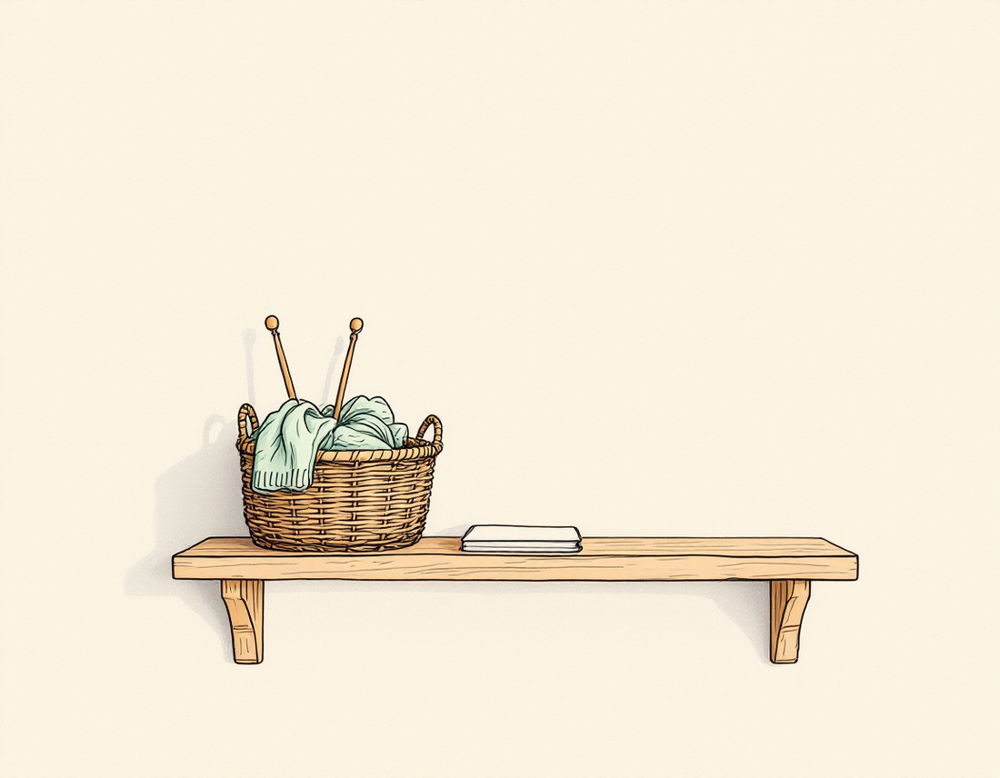
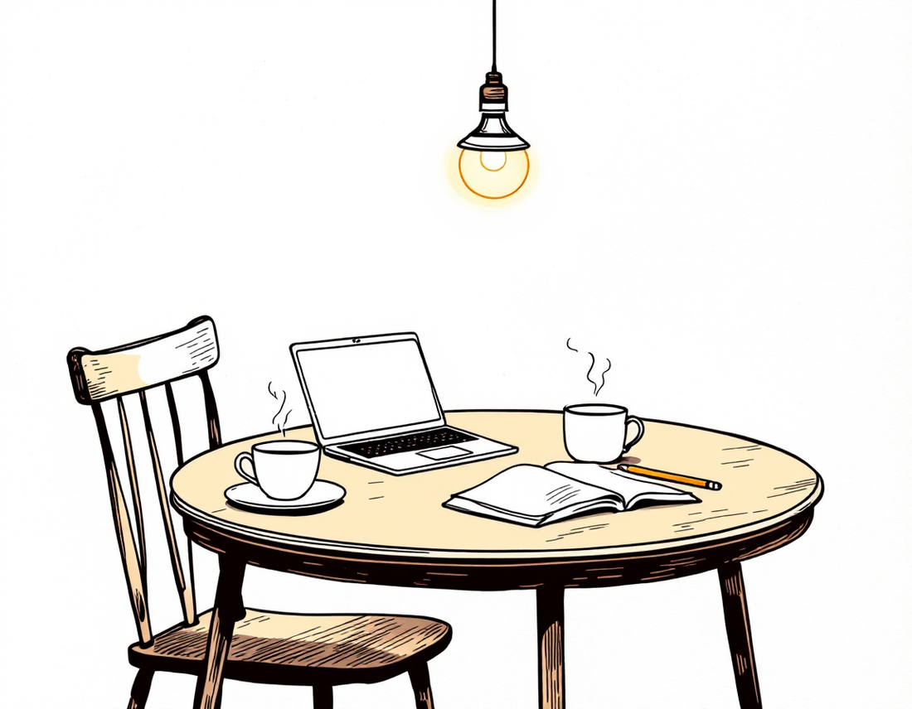
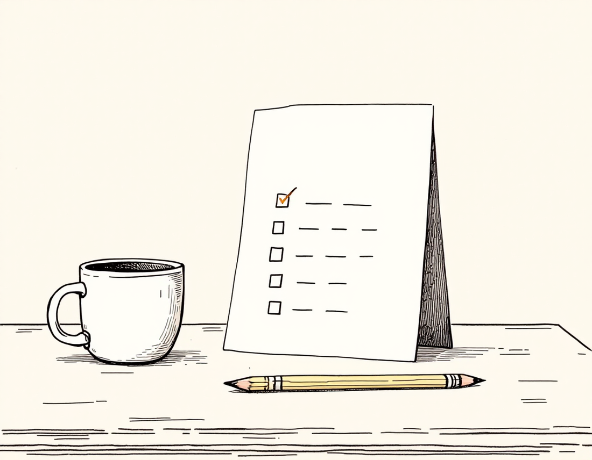
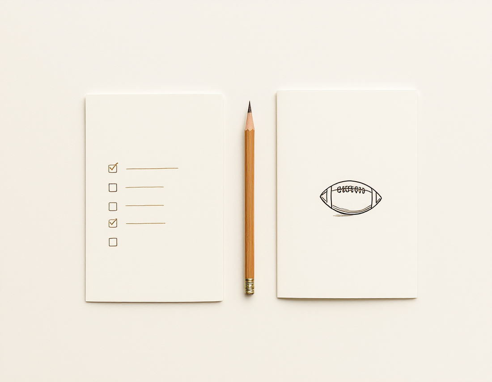
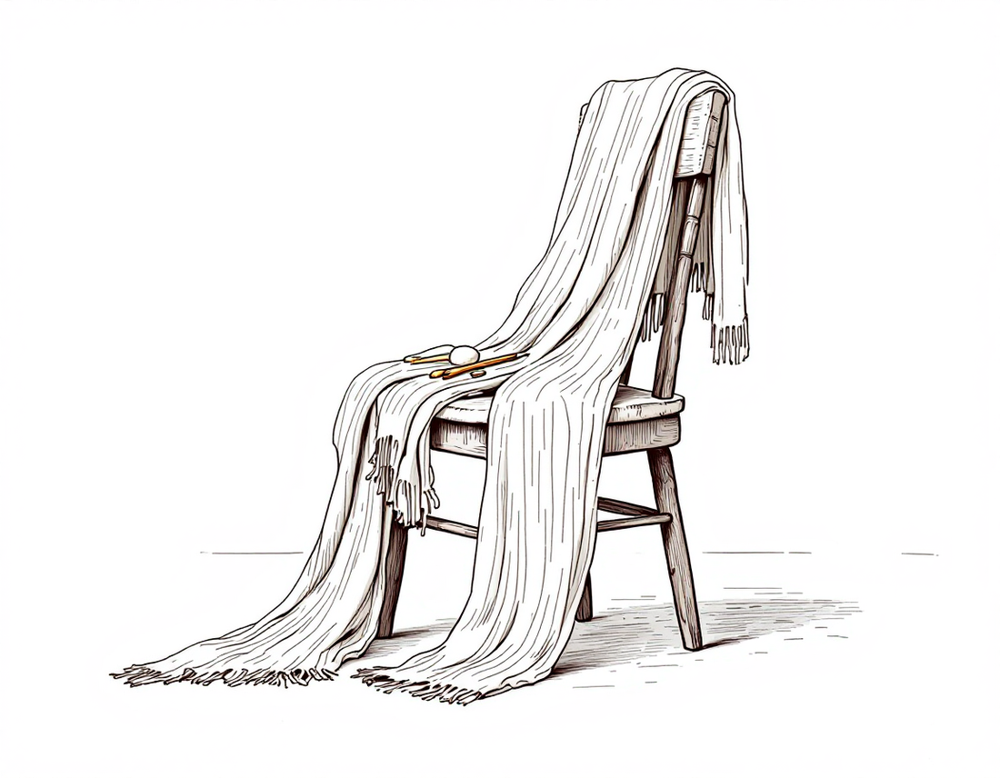

Sample chapter for review. Written from a story brief in a single pass by anthropic/claude-haiku-5.5 via OpenRouter; the Philippians 1:6 quotation (World English Bible) was verified word for word from source. Illustrations: AI spot drafts by flux-1.1-pro, in the house style. Audio: AI narration, Algenib via Gemini TTS in a British male reading voice. About 4,900 words. Prefer turning real pages? Open the paged book edition →
Listen to the story · full reading, 32 minutes · spoken word, male British narrator (AI voice: Algenib, Gemini TTS)
Different narrator? A 60-second alternate take, voice Charon: compare here. The illustrations and the audio are drafts made for this sample chapter; the book's final art will be human-made.
At 11:47 on a Tuesday night, Maya Chen lay on her back with her phone held above her face and scrolled past a stranger's sourdough, a cricket highlight, and a video of a dog failing to understand a closed door. Her bedroom light was off. The streetlight outside came through the blind in pale bars across the ceiling.
She knew what was on the shelf without looking. She looked anyway.
The shelf above her desk held the evidence. A green scarf, half knitted, rolled up in a plastic bag from Kmart, with the needles still through it like a bad decision. Below it, a journal from Year 8 with three entries, the last one dated February and ending mid-sentence: Today I was going to tell Lily that. Next to that, a guitar case that had not been opened since Dad bought her the guitar for her birthday, back when she had meant to learn "Riptide" in a week. And tucked behind the case, a card for Nana's birthday. It was sealed, stamped and addressed. It had been there since April. Nana's birthday was in April. This was the problem with Nana's card: it was technically finished, and it had never been posted, which somehow made it worse.
She put the phone face down on her chest and listened to the house. The fridge hummed. Noah's PlayStation was off for once. Mum's bedroom door was closed, the light under it already gone.
You start things, Maya thought, the way she sometimes thought about herself, as if reading a report. You start everything. You just don't do the next bit.

She did not want to be a person who started things. She wanted, quietly and with no one to tell, to be a person who finished them.
At breakfast the next morning, Mum was putting the lunchboxes together with the grim efficiency of a primary school teacher with a staff meeting at 8:15. She didn't look up.
"Which one's on the list today?"
"Which list?"
"Your list of things you're going to finish." Mum slid a muesli bar into Noah's bag without asking him. "The scarf?"
"Maybe."
"You started that scarf in Year 8."
"Mum."
"I'm not having a go." Mum did look up then, with the look she gave Year 3 students who had clearly done their homework on the bus. "I just think it would be nice to see you put a needle down and pick up something different, that's all. Something you've decided to finish."
Noah, who had been pretending to be deaf, said through a mouthful of Weet-Bix, "She did the first two rows of the scarf, that's like a lot."
"Thank you, Noah," Maya said.
"You're welcome."
Mum put the lunchboxes on the bench and kissed the top of Maya's head on her way past, quick and light, the way she did when she'd decided not to say the rest of it. Maya watched her go and felt the small, hot embarrassment that always came when someone had seen her clearly and been kind about it.
Youth group was in the back hall of Brandon Park Community Church on Wednesday nights, under the fluorescent lights that made everyone look slightly ill. Sasha, who was twenty-four, ran it with a whiteboard, a bag of Tim Tams that disappeared within ten minutes, and an absolute refusal to pretend she knew everything.
"Okay, quick one before games," Sasha said, leaning on the table with her arms crossed. "You've probably heard the church has been trialling the assistant thing. Some of you have been asking me about it in the car park, which is fine. We've got three families who've been using it for a few weeks now, and I want to say honestly what I think about it, and then you can all ask your parents whatever you want."
A few of the boys groaned. Lily, sitting next to Maya, made a face.
"Here's what I think," Sasha said. "It's not a friend. It's not a pastor. It doesn't pray for you, and if it ever tried to be your best mate I'd take the laptop away. It's an assistant that lives on your family's own computer, and it helps you with small stuff in the day. Mostly it asks you questions. It's been a bit like a workshop tool for some of the people I know. Your parents can see everything, and they should."
"Can it do my maths?" someone called.
"It can ask you what you're stuck on, which is more annoying but better for you." Laughter. "Anyway, if your family wants to have a look, I'm running a setup night for anyone who wants to bring a parent. It's an hour at your kitchen table, not a sales thing. Nobody gets signed up for anything."
Maya was half listening, staring at the whiteboard where someone had drawn a fish with a face. Then Sasha said, almost to herself, "And honestly, some of the best stuff has been people using it to actually follow through on things they've been meaning to do for ages. Nothing huge, just small, real things."
Something in Maya's chest turned over, unwelcome.
In the car on the way home, Mum drove with one hand, the radio low, and said, "What did you make of the lady with the Tim Tams?"
"She's alright."
"You're thinking about the assistant thing."
"I'm not thinking about anything."
"Mm." A long pause at the lights on Warrigal Road. "I'm sceptical, you know. I don't want some machine telling you what to think about God, or about your body, or about anything that matters."
"I know."
"But I'm also curious," Mum said. "I'd like to have a look together. Not because I'm going to say yes to anything you haven't thought about. Just to have a look."
Maya turned to the window so Mum wouldn't see her face do anything. "Okay," she said. "Yeah. Okay."
The setup evening was on the Thursday after next. Dad was on a late shift at the hospital, so it was just the three of them and the laptop, which Mum had cleared off the kitchen table along with the bills, the school newsletter, and a dried-out bunch of basil nobody had admitted to buying.
The walkthrough was a document Sasha had printed out, folded into quarters, with a coffee ring on the front. It was surprisingly plain. Step one: install from the official page on your own laptop, not a phone. Step two: create the household account with a parent's email. Step three: set the three daily times. Step four: read the family briefing together.

Noah wanted to know if it could tell him the footy scores. Mum said no. Noah said that was stupid. Mum said it was not her job to be interesting to a twelve-year-old at seven o'clock on a Thursday, which made Maya laugh, and that loosened everything up.
The family briefing was the strangest part. The screen went plain and white, and in neat black type it set out what it was and wasn't. It would never scold. It would not hold secrets from parents. It would send them to living people, family, church, doctors, counsellors, for anything a machine shouldn't carry. Mum read the whole thing twice, out loud the second time, in her Year 3 reading voice. At the bottom there was a small button labelled Parent window, and when Mum pressed it, a second panel slid open showing everything Maya had typed, which was nothing yet, and a log of the setup.
"Right," Mum said. "So I can see it all."
"That's the deal," Maya said.
"I know. I'm just saying it out loud so I don't forget I can."
They set the times. Morning Minute at 6:45, because Maya needed to be out of bed by 7:05 and no earlier, the Check-In at five, the Planning Session at nine. Then the screen cleared and a single line of text came up, unhurried, with the cursor blinking after it.
What do you want to be able to do by Christmas?
Maya looked at it for a long time. Noah leaned over her shoulder and said, "Just say 'win the footy grand final,'" and Mum said, "Noah, go and get your bowl," and he did, grumbling.
She typed be someone who, and then deleted it, because it sounded like a poster in the school library. She typed play guitar, and deleted that too, because it was a lie of a kind, and the guitar case was staring at her from the back of her head. She typed finish something, and stopped.
It was small and true, and she was embarrassed by how much it hurt to write.
She pressed enter.
The reply came back after a second: That's a good thing to want. Is there one thing you'd like to finish first, or would you rather start by noticing what gets in the way?
Mum read it over her shoulder, and said nothing for a while, and then said, "Huh," which in Mum's language was something close to respect.
On Monday, the first morning, the phone buzzed on the bedside table at 6:45 with a soft chime, and a small grey panel opened on the laptop Maya had left open on her desk the night before. Under a play icon was a single line of text: Morning Minute, about two minutes. Read or listen.
She pressed play. A calm voice, neither a man's nor a woman's, said, "Good morning, Maya. Here is your plan for today. You have a Maths test at ten, a science lab in the afternoon, and training after school. You also said you'd like to read a little each day. Try not to rush the first bit of the morning. Here is a line for you."
Then the text appeared on the screen under the play button:
being confident of this very thing, that he who began a good work in you will complete it until the day of Jesus Christ.
Philippians 1:6, World English Bible
Maya lay in bed and read it twice. Her first thought was that it was a little too neat, like something on a mug. Her second thought was that it had come from a machine that had no idea she had a half-knitted scarf in a plastic bag, and she didn't know what to do with that.
She got up at 7:04, ate a rushed Weet-Bix, drank her Milo standing up at the bench, and went to the Maths test. She got eleven out of fourteen, which was fine.
On Tuesday she read the verse again and didn't think about it at all, and on Wednesday she ignored the Morning Minute completely. She turned the volume down to nothing and let the grey panel sit there blinking while she brushed her teeth, and when she finally looked at it on the bus, the little dot next to it said missed, not failed, which was somehow worse and better.
On Thursday at five o'clock, while she sat at the kitchen table pretending to do her science write-up, the Check-In arrived.
Hi Maya. One question for the afternoon: what was something you started this week and didn't finish, and do you want to finish it?
She looked at it for a long time. Noah was yelling at the telly in the next room. Mum was not home yet. The kettle was cold.
She typed: The scarf. Also the card for Nana. It's been sitting there since April and I keep telling myself I'll post it when it's perfect, which is ridiculous because it's already fine.
The reply was brief. That's an honest answer. Do you want to post the card this week, or is the scarf the thing you'd like to work on first?
She sat back. It hadn't told her she was being silly. It hadn't said that's so relatable or you've got this. It had just asked her which one.
The card, she typed. Probably the card.
Okay. Would it help to write it tonight and post it tomorrow, so it's out of the house?
She laughed out loud, alone, in the kitchen. Then she got up, went to the bedroom, dragged the card out from behind the guitar case, and sat on the floor with a pen, reading the envelope as if it might tell her what she'd been afraid to write.
On Saturday night, the Planning Session arrived at nine. It was a longer message than the others. It set out her week in a plain list: Sunday rest, Monday Maths revision, Tuesday training, Wednesday youth group, Thursday science, Friday a sleepover at Lily's if her mum agreed, Saturday the footy with Noah in the afternoon. Each day had a single line that the assistant had drafted for her morning. Under it was a box:
This is a draft for tomorrow. Change anything you want. Nothing happens until you say so.
She had never seen her week laid out like that. It was like looking at a map of a suburb she lived in but had never visited from the outside. She moved Maths revision to Monday afternoon instead of Monday night, because she was always too tired after training. She cut the line about reading before school and rewrote it as read one chapter before bed, because she knew she would forget in the morning. She added post Nana's card to Sunday, underlined it in her head, and then, because the box let her, typed it in.
She pressed accept. It was the first time in her life she had edited her own plan and felt like it was hers.
The second week was harder.
On Tuesday she missed the Morning Minute because she was lying in bed with the blind down, unable to face the day. On Wednesday she missed the Check-In because Lily rang and they talked for two hours about a boy in Year 11 who might or might not have liked Lily back. On Thursday she didn't open the Planning Session at all, and by Friday morning the grey panel was a column of little dots, each one a small silent failure.
On Friday night she sat at the kitchen table with the laptop open and typed, before she could stop herself: I'm a mess. I've missed everything this week. I think it's pointless.
She waited, half expecting a lecture on consistency or a cheerful pep talk. The reply was calm.
Thanks for telling me. You haven't lost anything. Mornings can be hard, and some weeks are heavy. Would you like to start again tomorrow with just the Morning Minute, or do you want to pick a smaller thing first? Also, is there someone in your house or at church you could talk to about how this week has felt? Your mum can see this conversation, and I think she'd want to know you're finding it hard.
Maya sat very still. Then she closed the laptop halfway, went and found Mum in the lounge with a stack of spelling tests, and sat down on the arm of the couch.
"I missed a lot of stuff this week," she said. "The app thing. The mornings."
Mum put down her red pen. "Okay."
"It says you can see it. It told me you'd want to know."
"I do want to know." Mum looked at her for a long moment, the way she looked at a kid who had come in crying with a story that didn't quite make sense yet. "Are you alright, Maya? Not the app. You."
"I don't know," Maya said. And then, surprising herself, "I think I'm just bad at things that aren't exciting for the first week."
"Most people are." Mum patted the cushion beside her. "Come here."
Maya came and sat, and Mum put an arm around her, and they didn't say anything else about it for a while. Upstairs, the laptop was still open on the desk, but it didn't ask her anything. The next morning, at 6:45, the Morning Minute chimed. It was one sentence long.
Good morning, Maya. Start small today, and that counts.
She read the verse under it, the same one, and this time she saw it differently. He who began a good work. It didn't say she had done the work. It said someone had started it, and was still at it.
The idea for the page came, of all places, on a Sunday afternoon when she was lying on the floor of her room with the Gospel of Mark open on her chest.
She'd been reading it since the Tuesday after the bad week, a chapter a night, when she could manage it. The Morning Minute kept giving her one verse a day, and she had found herself wanting more than a verse. She wanted to read the whole thing, the way you watch a whole film instead of the trailer. Start to finish. No skipping the bits that were hard to read, like the locusts and the fig tree, which she had always wanted to skip.
She opened the laptop and typed: I want to read the Gospels properly, start to finish. Matthew, Mark, Luke, John. No skipping. I keep getting bored halfway and stopping.
The reply came quickly. That's a big, good thing to want. Before we plan it, can I ask: do you want to read all four at once, or one at a time? And what would make it easy to see that you'd done today's reading?
She thought about it for a while. One at a time. Mark first, it's the shortest. And I want to see it. I want to tick it off.
Would you like to build a simple page for it, something you open each morning with your Milo? I can help you make it on your own account, saved on your family's computer. It only needs to be small. One evening is enough for something simple, and you can finish it tonight if you want to.
Maya stared at the word finish. She typed yes, and then, because it was her page, wait, what does it actually look like?
Let's decide together. Here's what I'd suggest for a first version: the day's passage at the top, a tick box for each day, and a line underneath where you write one thing you noticed. Nothing else. Does that feel right, or would you change something?
She laughed quietly. Nothing else. Yes. That's exactly what I want.
They built it one question at a time, which was the only way she would have managed it. The assistant asked what she wanted the title to say, and she typed The Morning Page, then felt silly and changed it to Mark, Day by Day, then changed it back. It asked what colours she liked, and she said she wanted something calm, not Christian-bookshop beige, and not pink, and the assistant offered three options with names. She picked the sage green, and then a warm yellow for the tick, because yellow was what the sun looked like at seven in the morning when she was walking Noah to the school gate.
It asked her how she wanted the ticks to work, and she said she didn't want anything that would beep at her or make her feel like a failure if she missed a day. So they made the tick a simple box, and if it was empty the page just waited for her, without a red mark or a sad face or anything else. When she asked whether it would remember what she'd written, the assistant explained that it was saved as a plain file on the family computer, that her mum could open it, and that nothing about it lived anywhere else.
Mum came in around nine with a cup of tea and sat beside her on the bed without asking what she was doing. She watched the screen for a while, then said, "Show me when it's done."
It was done by ten. It was a plain page with a sage green background, a heading that said Mark, Day by Day, a little passage box that would fill in with the reading each morning, a row of tick boxes for each chapter, and a space below for one line. The first passage was Mark 1, and the first line was empty.

"That's it?" Mum said.
"That's it."
"It's lovely," Mum said, and meant it. "It's yours."
Maya opened it on her phone and then on the laptop, and the page loaded in under a second, every time. She ticked the first box and watched the yellow fill in. It made a tiny, ridiculous bit of satisfaction rise up in her chest, and she was not embarrassed by it at all.
Three weeks later, there were twenty-one ticks on the page.
She had missed two days in the middle, one on a Wednesday when she had a bad headache, and one on a Friday after a fight with Lily that she had been meaning to apologise for all week. On both days the box had waited, empty, and the next morning she had read two chapters instead of one, feeling strange and proud and slightly silly about it. The line under each tick had gradually become less of a chore. Some days she wrote Jesus was really annoyed at the disciples and I felt bad for them. Some days she wrote Didn't understand the parable of the sower, read it again tomorrow. One day, after the paralytic let down through the roof, she wrote Friends who carry you when you can't do it yourself, and then looked at the sentence for a long time before she left it.
The scarf was still on the shelf, rolled in its bag. She had not touched it. But she had posted Nana's card on the Sunday after the bad week, and Nana had rung back on the Wednesday, crying a little and laughing at herself, to say it had been the best thing she'd got in the post all year, and what had Maya been doing with a stamp that long?
On the Saturday of the twenty-first tick, Noah wandered into her room while she was reading, flopped on her beanbag, and said, "What's that on your phone?"
"My reading page."
"Can I have one?"
She looked at him, twelve years old, with a footy sock hanging off one foot, and realised he was asking for the same thing she had been asking for, in his own way, all along. "What are you reading?"
"Nothing," he said, and then, slowly, "The Whole Story of Footy, the book Dad got me. I've only done like four pages."
"Okay," Maya said. "Let's make you one."
It was a bit like teaching someone to ride a bike, except Noah kept saying the questions were stupid and then answering them with great seriousness. The assistant asked him what the title should say. He said Footy Book Day by Day. It asked how many pages he wanted each morning. He said four, and then, when Maya raised an eyebrow, said two. He picked blue, then changed it to black because blue looked like a Western Bulldogs guernsey, which was the wrong team. Maya sat beside him with her knees up and watched him type, one clumsy finger at a time, and felt a small, warm surprise that she was the one who had got him here.
When it was done, Noah stared at the screen. "Can I tick it now?"
"You can tick it when you've read it."
"That's not fair."
"It's the only fair way," she said, and he made a face and then grinned.
On Monday morning, a little note from the assistant arrived in Noah's account, and a copy went to Mum's, which the assistant had asked permission to send: Noah has built a reading page for the first time today. If you'd like to talk with him about the book, I'd be glad if you did. Mum read it at the bench and said, "Well, that's the best thing I've heard this year," and went upstairs to ask Noah which bit of footy history he'd liked best.

At youth group on Wednesday, Sasha stood by the whiteboard and said, "Maya's got something she wants to show you," in a voice so offhand that Maya knew she had planned it. Maya stood up with her laptop, feeling her ears go hot, and showed them the page. Sage green. The heading. The yellow ticks. Twenty-one of them, lined up like a row of little suns.
"It's just a reading page," she said. "It's nothing special."
"It's special if you finished it," said Lily, who had apologised on the Monday after the fight, in the car park, with two Maccas coffees and a face like someone who had practised the speech all the way over.
Pastor Graham, who had been leaning against the back wall with his arms folded, said, half joking, "I don't suppose that thing could do our welcome card for the new evening service? We've been trying to get it done since Easter, and the printer's been eating my drafts."
"It could probably do a page," Maya said. "I don't know about a card."
"Would you help us find out?" he said. "We'd pay you in Tim Tams."
The room laughed, and Sasha rolled her eyes and said, "Pastor, it's a fifteen-year-old's project, not a volunteer roster," and Maya said, "I'd have to ask Mum," and Pastor Graham said, "Good. That's the right answer," and went back to his coffee.
On the Saturday night, Maya was in bed by 10:30, which was her own choice. Nobody had told her to. She lay on her side with the blind up and the streetlight coming through in bars across the ceiling, and she opened the page on her phone for the last time that day.
She had read Mark 9 that evening. It was the part with the hard sayings about hands and feet and cutting things off, and she had not wanted to read it, and she had read it twice anyway. She ticked the box. The yellow filled in, small and bright.
Under the tick was the empty line. She had written something on every line for three weeks now, and this one was no different. She thought about it for a while, the way she thought about everything now, slowly, letting the sentence come before she typed it.

Read the hard bit twice. Still here.
She pressed save. The page closed itself with a soft little click. On the shelf above her desk the scarf sat in its plastic bag with the needles still through it, not finished, not forgotten. She looked at it for a moment, and then she turned off the lamp, pulled the blankets up to her chin, and lay in the dark, listening to the house settle around her. Down the hall, Noah's light was still on. Mum's was already off.
She was asleep before she could decide whether she was proud of herself, which, she realised afterwards, was probably the best way for it to go.
The assistant in this story is a real kind of product. It is a personal AI assistant that a family installs on its own laptop, not a phone app or a cloud service, and it works best when a parent is in the room from the start.
Setup takes about an hour, usually one evening at the kitchen table, following a printed walkthrough. The family installs it on the household computer, creates an account with a parent's email, and reads the family briefing together. A parent can open a window that shows everything the young person has typed and every message the assistant has sent. Nothing is hidden from the adults in the house.
The Morning Minute is a short spoken audio plan of about two minutes, with the same plan written underneath as text and a single verse at the end. It arrives at a time the family chooses. It does not nag. If you miss it, it simply records that you missed it.
The Afterschool Check-In arrives around five o'clock as a short text with one question to sit with. The Planning Session comes at night. The assistant drafts tomorrow, and the young person edits it, keeping, changing or deleting anything. Nothing happens until she accepts it.
The morning page in this story was built in a single evening, with the young person making every decision, including the title and the colours. It is a plain web page saved on the family's own account. A page like this takes one evening to finish because it is designed to be small enough to actually finish.
One honest line: the assistant did not make Maya read. It asked her questions, held the rhythm when she couldn't, and sent her back to her mum when the problem was bigger than a schedule. The rhythm held her until she could hold it herself.
Drafted 11 October 2026 · draft only, not for distribution.